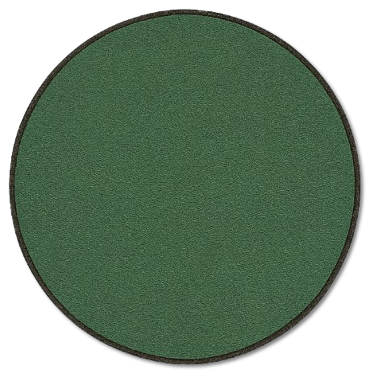
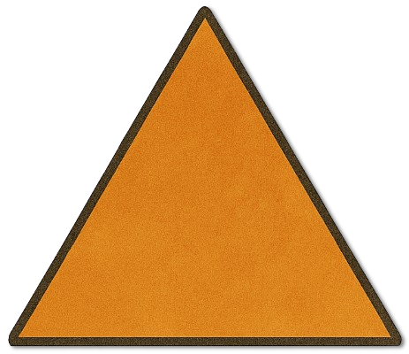
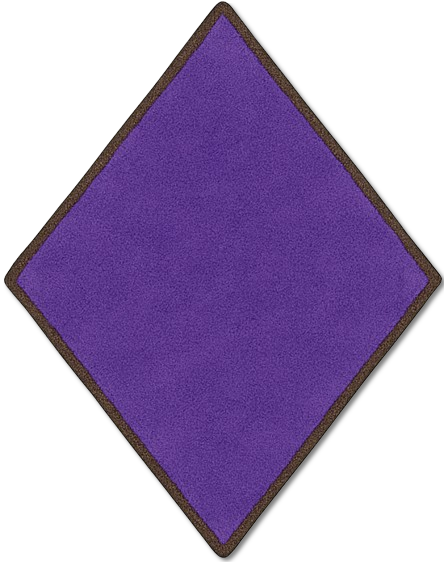
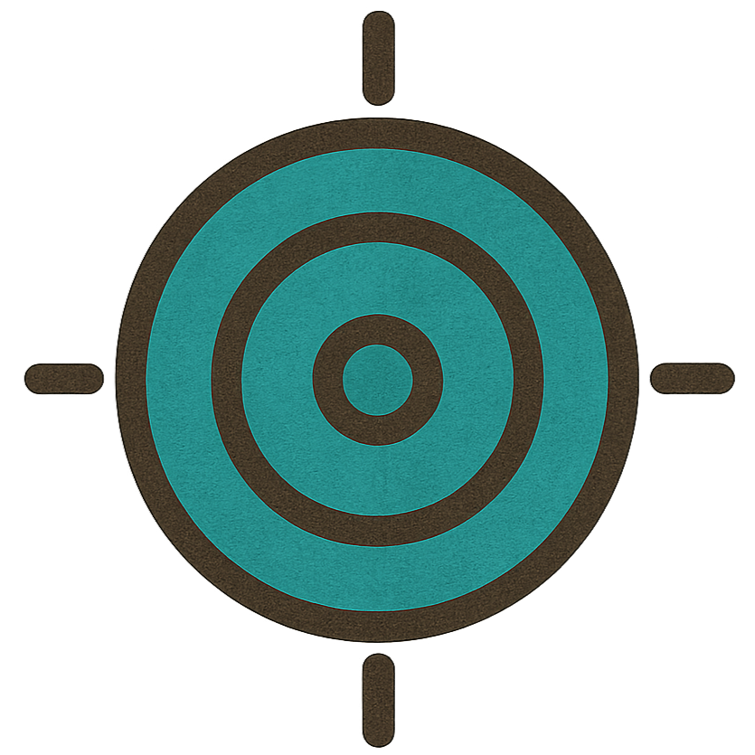

Lebenspunkte140 / 140Temporäre LP0TrefferwürfelW12Bewegung9 m
KRF 22 (+6)GES 8 (-1)KON 20 (+5)INT 6 (-2)WEI 10 (+0)CHA 6 (-2)
✦ Trollblut · Zugbeginn 1/1✦ Inspiration 0/1
Aktion 2/2
Bonusaktion 1/1
Reaktion 1/1 Besondere Aktion 4/4
Aura-Fokuspunkt 2/2
Gespeicherter Kreaturbogen. Im Kampf werden LP, Ressourcen und Zustände je Instanz in der Szene geführt.
Angriffe & Fähigkeiten
Landtroll-Keule+8 Treffer
1W10 +6
1 Aktion
Brockenwurf+6 Treffer
1W4 +2
1 Bonusaktion
Wirkung
Ein hastig geworfener Stein gegen ein einzelnes Ziel. Benötigt einen greifbaren Brocken.
Nahkampf+8 Treffer
1W4 +6
1 Aktion
Wirkung
Grundlegender waffenloser Nahkampfangriff.
Zerschmetternder Keulenbogen+8 Treffer
2W6 +6 · bis zu 4 gewählte Ziele
2 Aktion + 1 Bonusaktion + 1 Besondere Aktion
KON-Rettung SG 14 · bei Misslingen: Betäubt
Wirkung
Ein weiter Keulenschlag gegen bis zu vier im Szenenkontext erreichbare Gegner. Jedes gewählte Ziel erhält einen eigenen Treffer- und gegebenenfalls KON-Rettungswurf. Keine automatische Erfassung aller Beteiligten.
Knochenbrecher+8 Treffer
2W8 +6
1 Aktion + 1 Reaktion
Wirkung
Der Troll legt sein ganzes Gewicht in einen gezielten Hieb gegen einen Gegner. Wer so weit ausholt, verzichtet auf seine Abwehrreaktion.
Deckung hinter dem UnterarmAutomatisch
Effekt
1 Reaktion
Wirkung
Der Troll schützt Kopf und Kehle mit seinem vernarbten Unterarm. +2 RK bis zum Ende seines nächsten eigenen Kampfposts; nicht stapelbar.
Trollblut
Zu Beginn des eigenen Kampfposts: 1W12 + 10 LP regenerieren, höchstens bis zum Maximum. Bei 0 LP keine Wiederbelebung. Brennend oder Verbrannt unterdrückt die Heilung und senkt die RK um 2. Tatsächlicher Feuerschaden erneuert Verbrannt bis zum Ende des nächsten eigenen Posts; kein zusätzlicher automatischer Feuerschaden.
Zustände & Taktik
Keine Zustände im gespeicherten Bogen.
Gruppengegner. Bedrängt zunächst die Nahkämpfer; Fernkämpfer nur in den Keulenbogen aufnehmen, wenn sie laut Szene ebenfalls in seinem Weg stehen. Bei fehlender Angriffsgelegenheit „Abwarten / Zug aussetzen“ wählen: Trollblut und Zustandsdauer werden dabei abgewickelt.